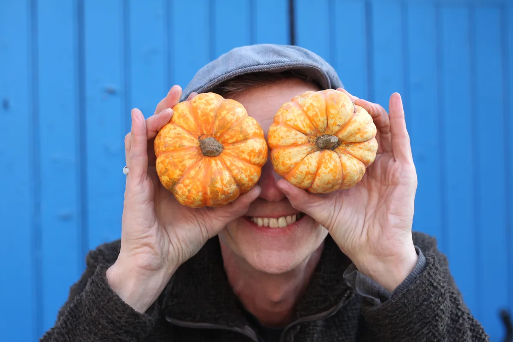

404
Looks like this page is not in season!
We couldn't find what you were after – it might have moved, or never grown here at all. Try heading back to the homepage, or have a look at our FAQs.
Back to the homepage
404
We couldn't find what you were after – it might have moved, or never grown here at all. Try heading back to the homepage, or have a look at our FAQs.
Back to the homepage